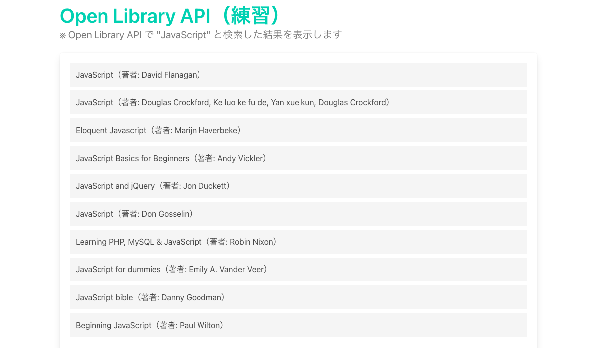
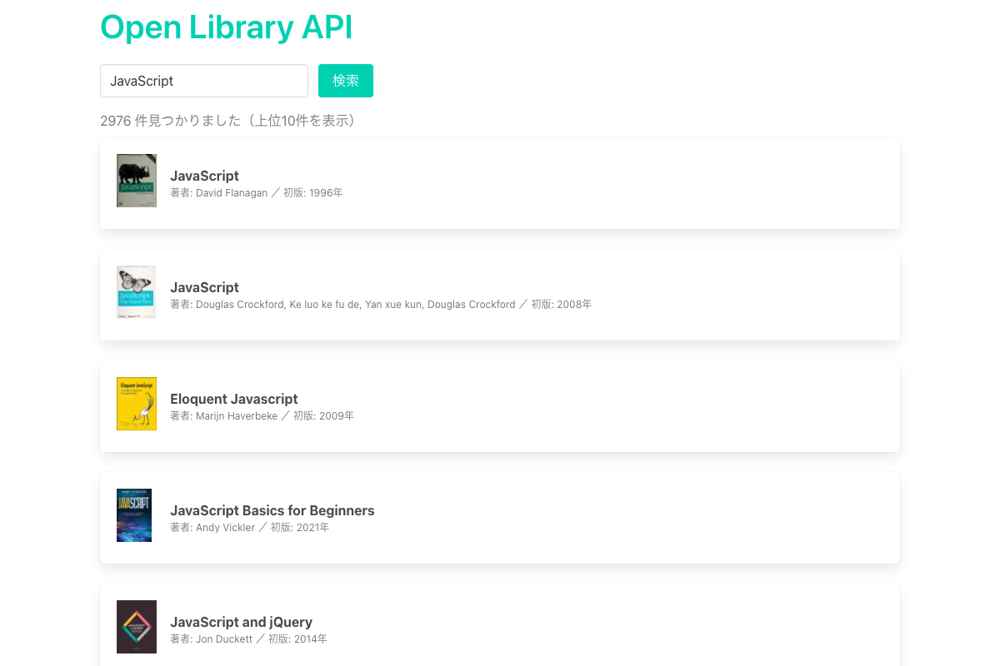
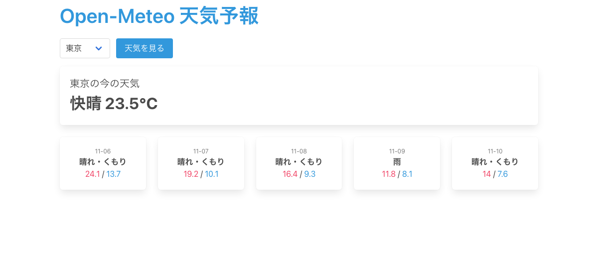
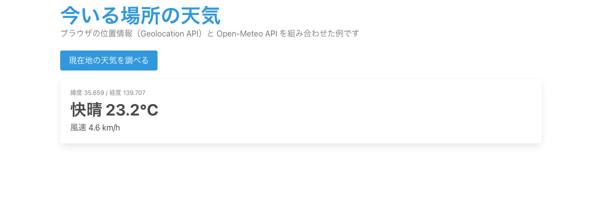
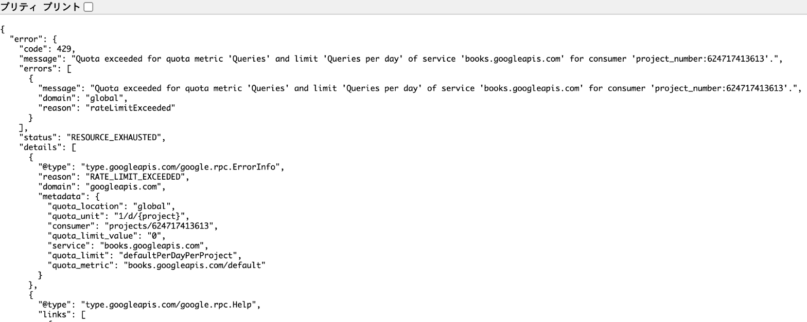
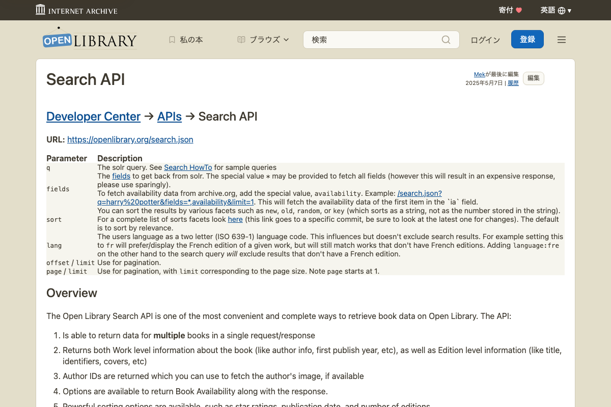
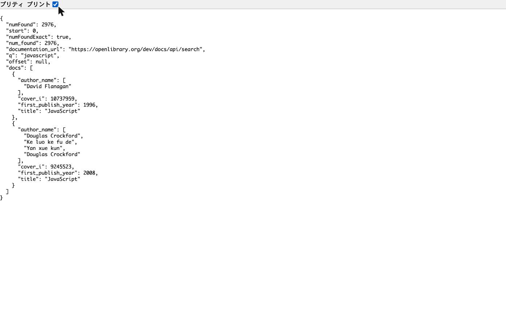

#04 補足 - Google Books API の読み替え
動画で使っているAPI
Google Books API
APIキーが必須になり、
動画のコードでは動かない
動画のコードでは動かない
→
代わりに使うAPI
Open Library API
APIキー不要。
同じように本を検索できる
同じように本を検索できる
まずはこれだけ
1
2
中身：この4つが作れる

01 本の一覧（練習）

02 本の検索（完成版）

03 天気予報（発展）

04 現在地の天気（発展）
3
この順で進める
動画 js04-06 を見る
仕組みを理解
→
01 の★を埋める
動画の代わりに手を動かす
→
02 で完成形を確認
検索できるアプリ
→
余裕があれば 03・04
別のAPIも試す
js04-07（Axios）など、ほかの動画はそのまま進めてOK
詳しい説明
困ったとき・もっと知りたいときに開いてください。
なぜ Google Books API が動かないのか

動画と同じURLを開くと、本の一覧ではなくエラー（429 ＝ 呼び出し回数の上限オーバー）が返ってきます。キーなしの共有枠が使い切られている状態です。
動画のコードとどこが違うのか（書き換えるのは3か所だけ）
① URL
googleapis.com/books/v1/volumes?q=
→
openlibrary.org/search.json?q=
② 一覧
response.data.items
→
response.data.docs
③ 項目
item.volumeInfo.title
item.volumeInfo.authors
item.volumeInfo.authors
→
doc.title
doc.author_name
doc.author_name
動画（Google Books）
const url = "https://www.googleapis.com/books/v1/volumes?q=" + keyword; // ①
axios.get(url).then(function (response) {
const items = response.data.items; // ②
items.forEach(function (item) {
$("#list").append(`<li>${item.volumeInfo.title}</li>`); // ③
});
});
読み替え（Open Library）
const url = "https://openlibrary.org/search.json?q=" + keyword; // ①
axios.get(url).then(function (response) {
const docs = response.data.docs; // ②
docs.forEach(function (doc) {
$("#list").append(`<li>${doc.title}</li>`); // ③
});
});
読み替え先のURLはどこで調べるのか（公式ドキュメント）
上の「書き換えるのは3か所だけ」の ① URL の話です
const url = "https://openlibrary.org/search.json?q=" + keyword;
この青い部分を、APIの公式ドキュメントで調べます

見るのは URL と Parameter の表だけでOK。
docs・title などの名前はどこで調べるのか（ブラウザでJSONを見る）
上の「書き換えるのは3か所だけ」の ② 一覧 と ③ 項目 の話です
const docs = response.data.docs;
doc.title doc.author_name
この緑・黄色の名前は、APIが返すデータ（JSON）の中に書いてあります
このURLをブラウザのアドレスバーに貼り付けて開きます。
https://openlibrary.org/search.json?q=javascript&limit=2

左上の 「プリティプリント」 にチェックを入れると見やすくなります。
データの入っている場所（Open Library は1段浅い）
Google Books（動画）
response.data
items
1冊目
volumeInfo
title
authors
Open Library（読み替え）
response.data
docs ← response.data.docs
1冊目
title ← doc.title
author_name ← doc.author_name
01-openlibrary-practice.html（練習）の答え
axios.get(url).then(function (response) {
console.log(response); // ★ まず全体を見る
console.log(response.status); // ★ 200 なら成功
console.log(response.data); // ★ 中身のデータ
const docs = response.data.docs; // ★ 本の一覧を取り出す
docs.forEach(function (doc) {
$("#list").append(
`<li class="mb-2 p-3 has-background-light">${doc.title}（著者: ${doc.author_name ? doc.author_name.join(", ") : "不明"}）</li>`
);
});
});
03・04（天気）の仕組み
03 天気予報
緯度・経度
選んだ都市
→
Open-Meteo API
キー不要
→
天気・気温
04 現在地の天気（2つのAPIを組み合わせる）
Geolocation API
ブラウザで現在地を取得
→
Open-Meteo API
その場所の天気
→
画面に表示